Vektoren
Vektor Ein Vektor wird durch seine Richtung und Betrag definiert (Nicht aber der Ort)
Nullvektor Ein Nullvektor \(\vec 0\) hat den Betrag
0und hat keine RichtungEinheitsvektor/normierter Vektor Ein Vektor \(\vec e\) oder \(\vec e_a\), welchen der Betrag
1hat und kann folgendermassen berechnet werden: \(\vec e_a=\frac{\vec a}{\vert a \vert}\)Gegenvektor Der Gegenvektor zum Vektor \(\vec a\) ist \(-\vec a\). Es ist also ein Vektor welcher parallel zu \(\vec a\) ist, denselben Betrag hat, aber in die entgegengesetzte Richtung zeigt.
Addition
Wenn zwei Vektoren addiert werden, werden sie graphisch aneinander gehängt.
Diese Operation ist kommutativ und assoziativ:
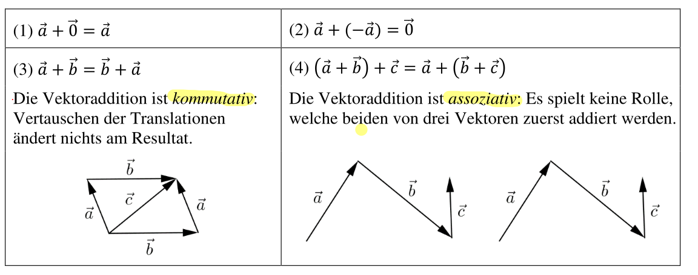
Skalare Multiplikation
Wenn ein Vektor mit einer Zahl multipliziert wird, wird der Vektor gestreckt, bzw. geschrumpft. Oft wird der Faktor als griechischen Buchstaben ausgedrückt, um Verwechslung zwischen Vektoren und Faktoren zu vermeiden.
Linearkombination
Eine Linearkombination ist das kombinieren von mehreren skallierten Vektoren: $$ \lambda_1\cdot\vec a_1+\lambda_2\cdot\vec a_2+...+\lambda_n\cdot\vec a_n $$
Betrag
Der Betrag eines Vektores ist seine Länge. $$ \begin{align} \left\vert\begin{pmatrix}x\y\end{pmatrix}\right\vert&=\sqrt{x^2 + y^2}\ \left\vert\begin{pmatrix}x\y\z\end{pmatrix}\right\vert&=\sqrt{x^2 + y^2+z^2}\ \end{align} $$
Kollinear
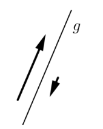
Zwei Vektoren sind kollinear, wenn es eine Gerade gibt, zu der beide parallel sind. Mathematisch kann dies als \(\vec a = \lambda\cdot\vec b\) ausgedrückt werden
Komplanar
Drei Vektoren heissen komplanar, wenn es eine Ebene gibt, zu der alle drei parallel sind.
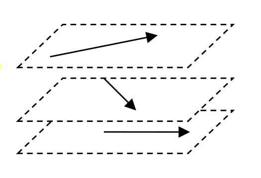
Linear (Un)abhängig
Vektoren werden linear unabhängig genannt, wenn es nur eine Möglichkeit gibt, mit einer Linearkombination den \(\vec 0\) zu bekommen. $$ \lambda_1 \cdot \vec a_1+\lambda_2\cdot \vec a_2 +...+\lambda_n\cdot \vec a_n=\vec 0 $$ Diese Definition ist kompatible mit Komplanar und Kollinear.
Wenn nur ein Vektor \(\vec v\) gegeben ist, welcher ungleich \(\vec 0\) ist, ist dieser linear unabhängig. Der \(\vec 0\) ist linear abhängig.
Wenn \(\vec a\) und \(\vec b\) linear unabhängig sind, dann ist \(\begin{vmatrix}a_x & b_x\\ a_y & b_y\end{vmatrix}\neq 0\). Wenn der Determinant nicht ausgerechnet werden kann, kann man sich überlegen, ob zwei Vektoren vielfaches voneinander sind, über den Rang oder über ein lineares Gleichungssystem.
Ein weiterer Tip: in \(\R^m\) können maximal \(m\) Vektoren linear unabhängig sein. Wenn es mehr Vektoren sind, können sie nicht linear unabhängig sein.
Eigenschaften:
- \(\det(A)\neq 0\)
- \(\Leftrightarrow\) Spalten sind linear unabhängig
- \(\Leftrightarrow\) Zeilen sind linear unabhängig
- \(\Leftrightarrow rg(A)=n\)
- \(\Leftrightarrow\) A ist regulär, bzw. invertierbar
- \(\Leftrightarrow A\cdot \vec x=\vec 0\) ist eindeutig lösbar
Satz 1
Es lässt sich der Vektor \(\vec c\) als Linearkombination der Vektoren \(\vec a\) und \(\vec b\) im 2D-Raum darstellen, wenn
- \(\vec a\), \(\vec b\) und \(\vec c\) komplanar zueinander sind
- \(\vec a\) und \(\vec b\) nicht kollinear sind
Satz 2
Wen drei Vektoren \(\vec a\), \(\vec b\) und \(\vec c\) nicht komplanar sind, lässt sich jeder Vektor \(\vec d\) in \(\R^3\) als eine Linearkombination von \(\vec a\), \(\vec b\) und \(\vec c\) darstellen
Kordinaten-System
Ein Kordinaten-System im Raum \(\R^2=R\times R\) hat folgendes:
- Ein Punkt \(O\) als Ursprung
- Ein Einheitsvektor \(\vec e_1\)
- Ein zweiten Einheitsvektor \(\vec e_2\), welcher 90° im Gegenurzeigersinn zu \(\vec e_1\) ist
Jeder Vektor in diesem Kordinatensystem kann als Linearkombination von \(\vec e_1\) und \(\vec e_2\) gebildet werden.
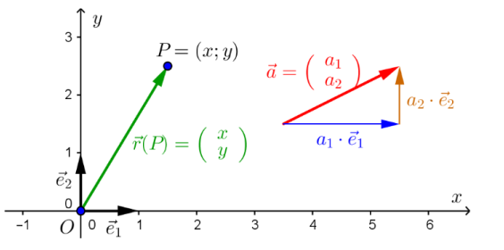
Ein Kordinaten-System im Raum \(R^3\) hat folgenedes:
- Einen Punkt \(O\) als Ursprung
- Einen Einheitsvektor \(\vec e_1\) (typischerweisse kommt dieser aus dem Display)
- Einen zweiten Einheitsvektor \(\vec e_2\), welcher druch eine 90° Drehung gegen den Urzeigensinn von \(\vec e_1\)
- Einen dritten Einheitsvektor \(\vec e_3\), welcher ortogonal (Rechtwinlig) zu \(\vec e_1\) und \(\vec e_2\) ist
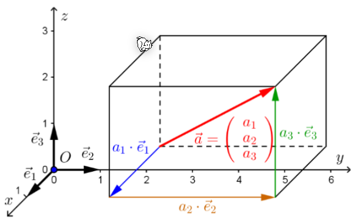
Ortsvektor
Ein Ortsvektor ist ein Vektor, welcher im Ursprung festgeheftet wurde. $$ \vec r(P)=x\cdot \vec e_1+y\cdot \vec e_2=\begin{pmatrix}x\y\end{pmatrix} $$ Der Ortsvektor \(\vec r(P)\) ist der Vektor vom Ursprung zum Punkt \(P\). Dies wird zum Teil auch als \(\vec{OP}\) dargestellt
Vektor zwischen zwei Punkten
Skalar Produkt
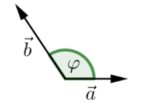
$$ \vec a \cdot \vec b = \vert \vec a \vert \cdot \vert \vec b\vert \cdot \cos(\varphi)\ \vec a \cdot \vec b=a_1b_1+a_2b_2+a_3b_3 $$ Ein Speziallfal ist, wenn \(\vec a\) oder \(\vec b\) den Nullvektor \(\vec 0\) ist. In diesem Fall ist das Skalarprodukt \(0\).Da es zwei Definition für das Skalarprodukt gibt, können diese gleichgesetzt werden und nach dem Zwischenwinkel afugelöst werden. $$ \varphi =cos^{-1}\left(\frac{\vec a \cdot \vec b}{|\vec a|\cdot |\vec b|}\right) $$
Wenn das Skalarprodukt \(\vec a \cdot \vec b=0\) ist, dann ist der Winkel zwischen \(\vec a\) und \(\vec b\) \(90°=\frac 2 \pi\)
Senkrechte Projektion
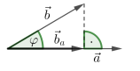
$$ \vec b_a =\frac{\vec a \cdot \vec b}{|\vec a|^2}\cdot \vec a\ |\vec b_a|=\frac{|\vec a \cdot \vec b|}{|\vec a|} $$Vektorprodukt
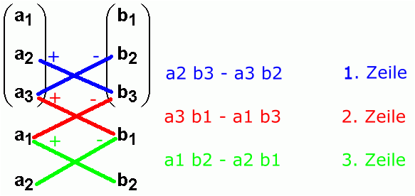
$$ \vec a \times \vec b \in \R^3\ |\vec a \times \vec b| = |\vec a|\cdot |\vec b|\cdot \sin(\varphi)\ ... $$Das Vektorprodukt ist nur für Vektoren im Raum \(\R^3\) definiert.
Der resultierende Vektor ist senkrecht zu \(\vec a\) und \(\vec b\). Der Betrag von \(|\vec a \times \vec b|\) ist die Fläche eines Paralelogrammes aufgespannt von \(\vec a\) und \(\vec b\).
Gerade als Vektoren
Eine Gerade kann folgendermassen dargestellt werden: \(\vec r(P)+\lambda\cdot \vec {PQ}\), wobei \(\vec r(P)\), ein Ortsvektor ist, \(\lambda\) ein beliebiger Faktor und \(\vec{PQ}\) ein Richtungsvektor, welcher die Richtung der Gerade anzeigt.
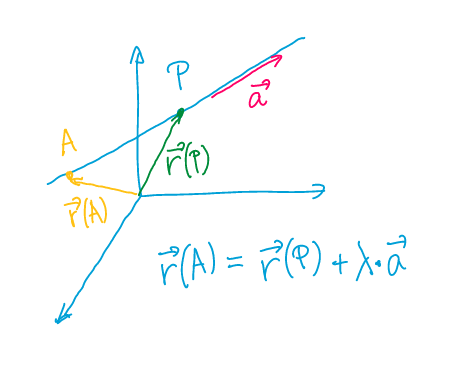
Wie stehen zwei Vektoren zu einander
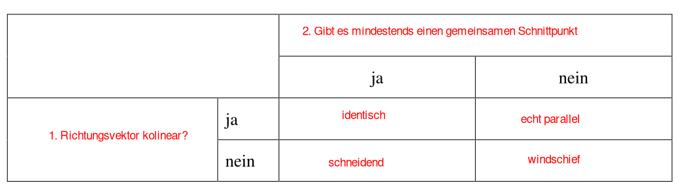
Abstand eines Punktes zu einer Gerade
Es gibt 3 Varianten den Abstand zwischen einem Punkt und einer Gerade zu bestimmen: In der folgenden Erklärung wird mit der Geraden \(g: \pmatrix{1 \\ 13 \\ -5}+ \lambda \cdot \pmatrix{3 \\ 5 \\ -4}\) und dem Punkt \(A=(3;-1;4)\) gearbeitet.
- Lösungsweg
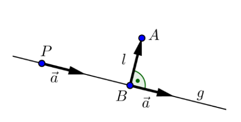
- Bestimme den Vektor \(\vec r(B)\), abhängig von \(\lambda\) \(\vec r(B)=\pmatrix{1+3\lambda\\ 13 + 5\lambda \\ -5 -4\lambda}\)
- Bestimme den Vektor \(\vec{BA}=\vec r(A) - \vec r(B)=\pmatrix{2 - 3\lambda \\ -14 -5\lambda \\ 9 + 4\lambda}\)
- Über das Skalarprodukt \(\lambda\) bestimmen: \(\vec {BA}\orth \vec a \Leftrightarrow \vec {BA} \cdot \vec a = 0\\\pmatrix{2 - 3\lambda \\ -14 -5\lambda \\ 9 + 4\lambda} \cdot \pmatrix{3\\ -1 \\ 4}=-100-50\lambda=0 \rightarrow \lambda = 2\)
- Nun kann die Länge bestummen werden \(l=\vert\vec{BA}\vert=9\)
- Lösungsweg
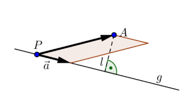
- \(\vec{PA}\) bestimmen \(\vec{PA}=\pmatrix{3 -1 \\ -1 -13 \\ 5 - (-5)}=\pmatrix{2 \\ -14\\ 9}\)
- Fläche \(F\) des Parallelogrammes bestimmen \(F=\vert\vec{PA}\times \vec a \vert=\left\vert \pmatrix{2 \\ -14 \\ 9}\times \pmatrix{3 \\ 5 \\ -4} \right\vert=\left\vert \pmatrix{11 \\ 35\\ 52}\right\vert=45 \sqrt 2\)
- Die Länge \(l\) bestimmen \(F=\vert\vec{PA}\times \vec a \vert \\F = \vert \vec a \vert \cdot l \\ l=\frac{\vert \vec {PA} \times \vec a\vert}{\vert \vec a \vert}=\frac{45\sqrt 2}{5\sqrt 2}=9\)
- Lösungsweg
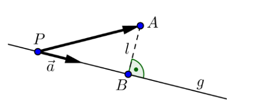
- \(\vec{PA}\) bestimmen \(\vec{PA}=\pmatrix{3 -1 \\ -1 -13 \\ 5 - (-5)}=\pmatrix{2 \\ -14\\ 9}\)
- \(\vec{PB}\) mit einer Projektion bestimmen \(\vert \vec{PB}\vert=\frac{\vert \vec{PA} \cdot \vec a \vert}{\vert \vec a \vert}=2 \cdot \sqrt{50}\)
- \(l\) mit Pytaghoras bestimmen \(l=\overline{AB}=\sqrt{\vert \vec{PA}\vert^2 - \vert\vec{PB}\vert^2}\)
Projektion von einem Vektor auf einen anderen
TODO
Koordinatendarstellung von Geraden
Die Geradendarstellung \(\vec r(P)+\lambda\cdot \vec{PQ}\) kann umgestellt werden in \(ax+bx+c=0\). Dies kann auch gelesen werden als, alle Punkte \(P(x, y)\), welche diese Gleichung erfüllt, ist auf der Gerade.
Eine Gerade kann nur in \(\R^2\) in der Koordinatendarstellung dargestellt werden.
Normalvektor
Der Normalvektor einer Gerade ist einfach aus der Koordinatendarstellung zu lesen. Die Gerade \(ax+bx+c=0\) hat den Normalvektor \(\pmatrix{a\\b}\). Dieser steht orthogonal (rechtwinklig) auf der Geraden
Umformen von Parameterdarstellung zu Koordinatendarstellung
Um eine Gerade in der Parameterdarstellung in die Koordinatendarstellung um zu wandeln, müssen die \(\lambda\), \(\mu\) und co. eliminiert werden. Dafür kann man quasi den "Gauss" anwenden. $$ g:\pmatrix{x\y}=\pmatrix{7\1}+\lambda\cdot \pmatrix{-2\-4}\ \text{Aus dieser Paramterdarstellung kann nun folgendes Gleichungssystem gebaut werden:}\ \begin{align} x &=7 -2\cdot \lambda \tag 1\ y &= 1 -4 \cdot \lambda \tag2 \ 2\cdot(1)-(2): 2x-y -13 &= 0 \end{align} $$
Umformen von Koordinatendarstellung zu Parameterdarstellung
Um von der Koordinatnedarstellung in die Parameterdarstellung einer Gerade zu wechseln, müssen zwei Punkte auf der Gerade gefunden werden. Von diesen kann die Form \(g: \vec r(P)+\lambda\cdot \vec{PQ}\) gebildet werden.
Um zwei Punkte aus der Koordinatendarstellung zu lesen, hilft es, die \(x\) oder \(y\) auf 0 zu setzen und der andere Parameter zu ändern bis 0 erreicht wird.
Normalisieren der Parameterdarstellung
TODO
Darstellung einer Ebenen
Parameterdarstellung von Ebenen
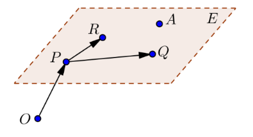
Eine Ebene kann mit drei Punkten beschrieben werden: \(E: \vec r(P)+\lambda \cdot \vec{PR}+\mu\cdot \vec{PQ}\), dabei sind \(\lambda\) und \(\mu\) beliebige Zahlen. Der Punkt \(P\) heisst Aufpunkt, die Vektoren \(\vec{PR}\) und \(\vec{PQ}\) heissen Richtungsvektoren.
Koordinatendarstellung von Ebenen
Die Koordinatendarstellung einer Ebenen ist definiert als: \(E: ax+by+cz+d=0\). Die Variablen \(a\), \(b\) und \(c\) bestimmen die Ausrichtung der Ebene. Die Variable \(d\) verschiebt die Ebene parallel.
Die Koordinatendarstellung heisst normiert, wenn \(|\vec n|=1\) (der Normalvektor) ist.
Normalvektor einer Ebene
Aus von einer Ebene kann der Normalvektor berechnet werden. Dieser steht senkrecht auf der Ebene und ist folgendermassen definiert: \(\vec n=\pmatrix{a\\b\\c}\)
Wenn wir nicht die Koordinatendarstellung haben, sondern die Parameterdarstellung \(E: \vec{r}(P)+\lambda \cdot \vec a+\mu\cdot\vec b\), dann ist \(\vec n = \vec a \times \vec b\).
Umrechnung von Parameterdarstellung zu Koordinatendarstellung
Die Umrechnung der Parameterdarstellung zur Koordinatendarstellung einer Ebene funktioniert gleich, wie bei der Gerade. Der einzige Unterschied ist, dass es drei Gleichungen statt zwei hat.
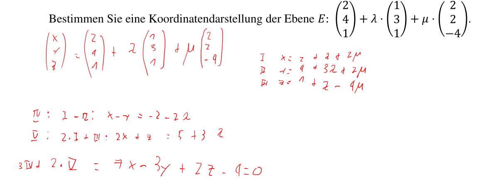
Eine zweite Art, wie dasselbe bewerkstelligt werden kann, ist über den Normalvektor. Wenn man den Normalvektor einer Ebene weiss, kann davon sehr einfach die Koordinatendarstellung abgelesen werden. Ebenfalls ist bekannt, dass der Normalvektor senkrecht/orthogonal auf der Eben steht. Mit diesen Informationen kann folgende Gleichung abgeleitet werden: $$ E: \pmatrix{2\4\1}+\lambda\cdot\pmatrix{1\3\1}+\mu \cdot \pmatrix{2\2\-4}\ \vec n=\pmatrix{1\3\1}\times \pmatrix{2\2\-4}=\pmatrix{-14\6\-4}\ E: -14x+6y-4z+d=0\ \text{Nun muss noch P eingesetzt werden, um d zu bestimmen:}\ -14\cdot 2 + 6\cdot 4 -4\cdot 1+d=0\Rightarrow d = 8\ E: -14x + 6y - 4z + 8 = 0 $$
Umrechnung von Koordinatendarstellung zu Parameterdarstellung
Wie bereits bei der Gerade, müssen drei Punkte auf der Ebenen gefunden werden. Dies ist am einfachsten, wenn ein Parameter auf 0 gesetzt wird und die anderen entsprechend verändert werden, dass das Ergebnis 0 ergibt.
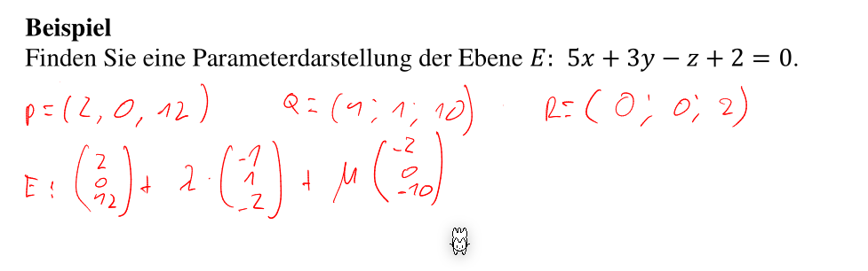
Liegt ein Punkt auf einer Ebene
Wenn überprüft werden soll, ob ein Punkt auf einer Ebene liegt, kann die Parameterdarstellung einfach dem Punkt gleichgesetzt werden. Wenn es für diese Gleichung einen Wert für \(\lambda\) und \(\mu\) gefunden werden kann, dann ist der Punkt auf der Ebene.
Bei der Koordinatendarstellung müssen Werte für \(a\), \(b\), \(c\) und \(d\) gefunden werden, damit die Form \(ax+by+cz+d=0\) stimmt.
Liegt eine Gerade auf einer Ebene
TODO
- Parameterform gleichsetzten
- Ebene Koordiatenform, Gerade parameterform. Punkt von Gerade allgemein ausdrücken und danach in der Koordiatenform der Ebenen einsetzten
Wie Ebenen zu einander stehen
Ebenen können entweder identisch, parallel oder schneidend zu einander stehen.
Parallel
Wenn überprüft werden soll, ob zwei Ebenen \(E\) und \(F\) parallel zu einander sind, muss überprüft werden, ob die beiden Richtungsvektoren von \(E\) komplanar zu den Richtungvektoren von \(F\) sind.
Wenn die Koordinatenformen der Ebenen gegeben sind, müssen entweder ein Faktor \(p\) für folgende Gleichungen gefunden werden.
Beispiel: $$ E: a_1x+b_1y+c_1z+d_1=0\ F: a_2x+b_2y+c_2z+d_2=0 $$ In diesem Fall muss es ein Faktor \(p\) geben, für welche gilt: $$ a_1=a_2\cdot p\ b_1=b_2\cdot p\ c_1=c_2\cdot p\ d_1\neq d_2\cdot p $$ Eine weitere Möglichkeit ist, dass die Normalvektoren ausgerechnet werden können. Diese stehen Senkrecht auf der Ebene \(E\). Der Normalvektor von \(F\) koolinear zu dem von \(E\) ist, dann sind die Ebenen parallel.
Identisch
Wenn überprüft werden soll, ob zwei Ebenen identisch sind und sie in der Koordinatensform gegeben sind, muss folgendes gültig sein (die letzte Gleichung ist anderst): $$ a_1=a_2\cdot p\ b_1=b_2\cdot p\ c_1=c_2\cdot p\ d_1=d_2\cdot p $$
Schneidend
Wenn zwei Ebenen schneidend sind und sie gleichgesetzt werden, dann kommt dabei eine Geradegleichung heraus. Bei der Koordinatenform müssen die Gleichungen der beiden Ebenen in dasselbe Gleichungssystem eingefügt werden, bei der Parameterform müssen die Gleichungen gleichgesetzt werden.
$$
E: x-2y+2z-1=0\
F: 2x-3y-z+2=0
$$
Diese zwei Gleichungen können in folgendes Gleichungssystem umgewandlet werden:
$$
\begin{align}
x-2y+2z&=1\
2x-3y-z&=-2
\end{align}
$$
Daraus kann mit dem Gaus nach \(x\), \(y\) und \(z\) gelöst werden:
$$
\left(
\begin{array}{ccc|cr}
1 & -2 & 2 & 1\
2 & -3 & -1 & -2
\end{array}
\right) \Rightarrow
\left(
\begin{array}{ccc|cr}
1 & 0 & -8 & -7\
0 & 1 & -5 & -4
\end{array}
\right)\
\
\begin{align}
x&=-7+8\lambda\
y&=-4+5\lambda\
z&=\lambda\
\end{align}
$$
Aus diesen Gleichungen kann die Parameterform abgeleitet werden: \(\pmatrix{x\\y\\z}=\pmatrix{-7\\-4\\0}+\lambda\cdot\pmatrix{8\\5\\1}\)
Abstand von Punkt zu Ebene
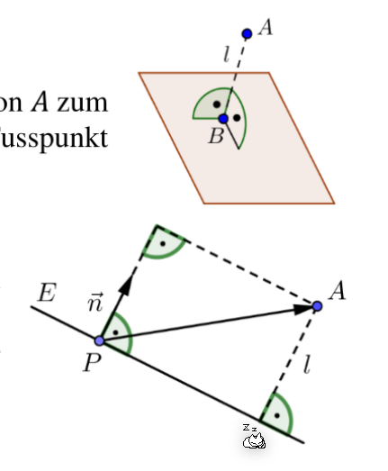
Um den Abstand \(l\) zu berechnen, wird ein beliebiger Punkt \(P\) gewählt. Danach wird der Vektor \(\vec{PA}\) auf den Normalvektor \(\vec n\) projiziert. Die Länge dieser Projektion ist \(l\). $$ \text{Wenn die Ebene nicht normiert sind: } l=\frac{|ax_A+by_A+cz_A+d|}{|\vec n|}\ \text{Wenn die Ebene normiert ist: } l=|ax_A+by_A+cz_A+d| $$ In der Formel obenen kommen \(x_A\), \(y_A\) und \(z_A\) von den Koordinaten von \(A\) und \(a\), \(b\) und \(c\) von der Koordinatenform der Ebene.